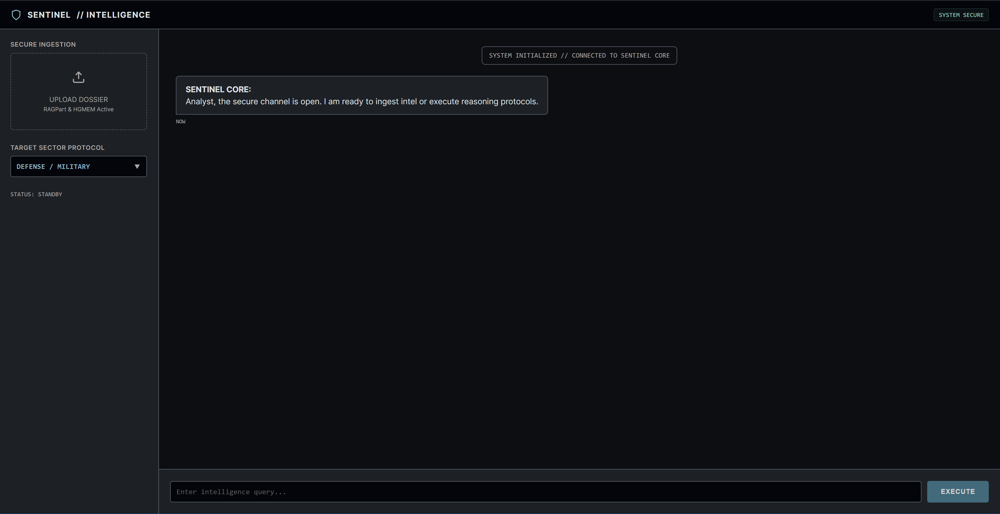

RETURN TO DASHBOARD
SENTINEL // OPERATOR FIELD GUIDE
Version: 1.0.0 | Clearance Level: UNCLASSIFIED
This manual details the standard operating procedures for the Sentinel Intelligence Platform. Follow these
protocols to ensure secure data ingestion and accurate intelligence retrieval.
1. System Overview
The Sentinel Dashboard allows for real-time interaction with the secure Hypergraph backend. The interface is
divided into two primary zones: Ingestion (Left Panel) and Intelligence (Right
Panel) .
[IMAGE MISSING: src/main/resources/static/images/manual_overview.png]
'">
Fig 1.0: The Sentinel Command Dashboard
2. Secure Ingestion Protocol
To analyze documents (PDF, TXT, MD), they must first be securely ingested into the vector vault.
Select the Target Sector Protocol from the dropdown menu (e.g., DEFENSE,
LEGAL). This adjusts the AI's analytical persona.
Click the UPLOAD DOSSIER zone (or drag-and-drop a file).
Wait for the status indicator to switch from UPLOADING... to READY .
Fig 2.0: Secure Ingestion Panel & Sector Selector
3. Intelligence Gathering
Once data is ingested, use the chat interface to query the system.
Context Aware: The AI will answer based strictly on the uploaded documents in
the Hypergraph.Live Status: The SYSTEM SECURE badge will
turn BLUE while the system is reasoning.Security Failsafe: Queries asking for sensitive credentials (e.g., passwords, keys)
will trigger the UNAUTHORIZED response protocol.
4. Evidence Verification
Sentinel enforces strict auditability. Every fact generated by the AI is anchored to a specific source
document.
Citation Badges: Click any blue citation badge (e.g., [project_alpha.pdf])
in the response stream.Evidence Viewer: This opens the source document in the right-hand panel.Contextual Highlighting: The system automatically highlights
in blue the specific passage used to generate the answer.
[EVIDENCE VIEWER SCREENSHOT PLACEHOLDER]
Fig 3.0: Audit Trail & Source Highlighting
5. Troubleshooting
If the CONNECTION LOST alert appears in the log, the system has
lost contact with the Neural Core.
Common Resolution Protocols
Restart the Application: Close the Sentinel Dashboard window and relaunch the
executable. This re-initializes the background services.Check File Integrity: Ensure uploaded documents are standard text-based formats (PDF,
DOCX, TXT) and are not password-protected.System Resources: The AI requires significant memory. Close other heavy applications to
free up resources for the reasoning engine.
CRITICAL ERROR SUPPORT
If issues persist, generate a system log and contact your
Deployment Specialist or Enterprise Support.
 Fig 2.0: Secure Ingestion Panel & Sector Selector
Fig 2.0: Secure Ingestion Panel & Sector Selector